信号的自变量变换¶
浙江大学 2022《信号与系统》（胡浩基）§1.4.2 听课笔记
1 自变量变换¶
自变量变换(transformation of the independent variable)：把信号 \(x(t)\) 的「\(t\)」换成「\(at+b\)」，得到新信号 \(x(at+b)\)。从图像上看，就是把波形沿横轴平移、翻转、压缩或拉伸，纵轴的值不变。
做这类题的核心是四句口诀（§2），它对应翻转、压缩或拉伸、平移三种基本变换。
2 连续信号的自变量变换¶
2.1 概念：四句口诀¶
重点
做这类题目的口诀：
-
化成标准形式。
-
前有负号翻转。
-
系数大于 \(1\) 压缩，系数小于 \(1\) 拉伸（指系数的绝对值）。
-
加号左移，减号右移。
口诀的第一句管起步（化成标准形式），第二、三、四句各管一种基本变换：翻转、压缩或拉伸、平移。下面先把这三种变换逐个看清。
2.2 概念：翻转变换 \(x(-t)\)（口诀第二句）¶
只把 \(t\) 换成 \(-t\) 的变换叫翻转（time reversal）：\(x(t)\to x(-t)\)。口诀第二句「前有负号翻转」说的就是它。要点只有两条：
-
以纵轴（\(t=0\)）为对称轴做镜像：原来在 \(t=p\) 处的点，变到 \(t=-p\) 处，纵轴的值不变；
-
\(t=0\) 处的点不动（\(x(-0)=x(0)\)）。
翻转两次回到原来的信号：\(x(-(-t))=x(t)\)。
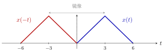
图 1 翻转：蓝色 \(x(t)\) 的三个关键点 \(0,3,6\) 变成红色 \(x(-t)\) 的 \(0,-3,-6\)，纵轴值不变，整体以纵轴为对称轴镜像。
▸ 翻转和「偶、奇信号」是同一回事。 第一份笔记里「偶信号 \(x(t)=x(-t)\)」「奇信号 \(x(t)=-x(-t)\)」，用现在的话说就是：翻转之后和原信号相同的是偶信号，翻转之后和原信号相差一个负号的是奇信号。任何信号的偶部和奇部也都是靠翻转造出来的：
下图用上面的三角波 \(x(t)\) 演示：\(x(t)\) 本身不是偶的也不是奇的，它的偶部是「\(x(t)\) 与翻转后的 \(x(-t)\) 取平均」，两个半高度的三角形左右对称；奇部是「相减再除 \(2\)」，右边是正的、左边是负的，关于原点反对称。
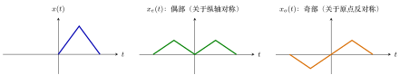
图 2 用翻转造出偶部与奇部：\(x(t)=x_e(t)+x_o(t)\)。偶部和奇部的峰高都是 \(\tfrac12\)。（验算：\(t=3\) 时 \(x_e=\tfrac{1+0}{2}=\tfrac12\)，\(x_o=\tfrac{1-0}{2}=\tfrac12\)，加起来是 \(1\)；\(t=-3\) 时 \(x_e=\tfrac12\)，\(x_o=-\tfrac12\)，加起来是 \(0\)，与 \(x(-3)=0\) 一致。）
▸ 和日常经验的对应。 把 \(x(t)\) 想成一段声音，\(x(-t)\) 就是倒放（录音从后往前播）。时间上的翻转是一个数学操作；真实世界里的信号不能真的「倒着发生」，但处理已经录好的数据时可以做。
2.3 概念：时间尺度变换 \(x(at)\)（口诀第三句）¶
只做「压缩或拉伸」而不翻转、不平移的变换，叫时间尺度变换（time scaling）：\(x(t)\to x(at)\)，\(a\gt{}0\)。口诀第三句说的就是它：
-
\(a\gt{}1\)：压缩，波形沿横轴向纵轴（\(t=0\)）靠拢，变窄；
-
\(0\lt{}a\lt{}1\)：拉伸，波形离纵轴越来越远，变宽。
关键点的位置规则：原来在 \(t=p\) 处的点，变到 \(t=p/a\) 处，纵轴的值不变。因为新信号在 \(t\) 处的值是原信号在 \(at\) 处的值，要看到原来 \(p\) 处的特征，需要 \(at=p\)。
| \(x(t)\) | \(x(2t)\)：压缩 | \(x(t/2)\)：拉伸 | |
|---|---|---|---|
| 关键点 \(t\) 值 | \(0,\ 3,\ 6\) | \(0,\ 1.5,\ 3\) | \(0,\ 6,\ 12\) |
| 峰高 | \(1\) | \(1\) | \(1\) |
| 底边宽度 | \(6\) | \(3\) | \(12\) |
（用的是一个三角波 \(x(t)\)：\(t=0\) 为 \(0\)，\(t=3\) 为峰，\(t=6\) 为 \(0\)。§2.7 的例 1 用的也是它。）
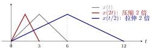
图 3 时间尺度变换。灰：\(x(t)\)；红：\(x(2t)\)，所有关键点除以 \(2\)，向纵轴靠拢；蓝：\(x(t/2)\)，所有关键点乘以 \(2\)，远离纵轴。三条曲线的峰高都是 \(1\)，三角形的左端都固定在 \(t=0\)。
▸ 关键：尺度变换是以纵轴为中心的。 上面的三角形左端恰好在 \(t=0\)，所以看起来像「只是变窄」。如果波形不在原点，压缩的同时位置也会变：关键点 \(p\to p/a\)，不只是宽度变。下图用一个落在 \([4,8]\) 上的三角形来演示：
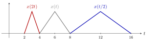
图 4 原来的三角形在 \([4,8]\)（峰在 \(6\)）。\(x(2t)\) 的三角形在 \([2,4]\)（峰在 \(3\)），向原点靠拢；\(x(t/2)\) 的三角形在 \([8,16]\)（峰在 \(12\)），远离原点。每个点的位置都乘了 \(1/a\)。
所以要先做「压缩或拉伸」再做「平移」，这是同一个道理：压缩是围绕原点进行的。
▸ 压缩和拉伸改变了什么，没改变什么。
-
没变：峰高（纵轴的值）。
-
变了：宽度变成原来的 \(1/a\) 倍；面积也变成原来的 \(1/a\) 倍。三角形的底边 \(6\to3\to12\)，面积 \(3\to1.5\to6\)。一般公式 \(\int_{-\infty}^{+\infty}x(at)\d t=\dfrac{1}{a}\int_{-\infty}^{+\infty}x(t)\d t\)（\(a\gt{}0\)，把 \(s=at\) 代入即可）。
这里能解释前面一份笔记里的一个现象：\(\Sa(\omega t)\) 的面积是 \(\dfrac{\pi}{\omega}\)，会随 \(\omega\) 变小；而 \(\dfrac{\sin\omega t}{t}=\omega\cdot\Sa(\omega t)\) 乘了一个 \(\omega\)，面积刚好回到 \(\pi\)。所以「\(\sin\omega t/t\) 的积分始终是 \(\pi\)」的几何原因是：宽度压成 \(1/\omega\)，高度又乘 \(\omega\)，两者抵消。
▸ 和日常经验的对应。 把 \(x(t)\) 想成一段声音，\(x(2t)\) 就是用 \(2\) 倍速播放：时长缩短为一半，同时音调升高（采样点被更快地播放）。\(x(t/2)\) 是半速播放：时长翻倍，音调降低。注意这里说的是「简单地加速或减速播放」；很多播放器的「变速不变调」用的是别的算法，不属于单纯的 \(x(at)\)。
▸ \(a\lt{}0\) 怎么办。 \(x(at)\)（\(a\lt{}0\)）就是先翻转再压缩或拉伸：\(x(-2t)=x(2(-t))\)，先画 \(x(-t)\)，再按绝对值 \(2\) 压缩。口诀的第二句和第三句分别处理这两件事。
▸ 图解：不同的 \(a\) 一排看。 把同一个三角波 \(x(t)\) 用 \(a=3,\,2,\,1,\,\tfrac12,\,\tfrac13\) 各做一次，五行对齐，一眼看出「\(a\) 越大越窄、越靠近纵轴，\(a\) 越小越宽、越远离纵轴」：
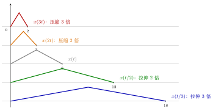
图 5 同一个三角波（原来的底边在 \([0,6]\)）经 \(x(at)\) 之后，底边的右端点变成 \(6/a\)：\(a=3,2,1,\tfrac12,\tfrac13\) 对应 \(2,3,6,12,18\)。峰高始终是 \(1\)，左端固定在 \(t=0\)。
▸ 再强调三点。
-
压缩的是时间轴，不是纵轴：峰高不变，宽度变成 \(1/a\)。
-
\(a\gt{}1\) 压缩，\(0\lt{}a\lt{}1\) 拉伸：这就是口诀第三句，看的是系数的绝对值。
-
离散情形要小心：\(x[2n]\) 会丢掉点，\(x[n/2]\) 在奇数处没有定义（§3 离散一节会讲），所以离散里基本只用 \(\pm1\)。
2.4 概念：平移变换 \(x(t-t_0)\)（口诀第四句）¶
只做平移的变换：\(x(t)\to x(t-t_0)\)。口诀第四句「加号左移，减号右移」说的就是它：
-
\(x(t-t_0)\)（\(t_0\gt{}0\)）：右移 \(t_0\)，也叫延迟（delay）；
-
\(x(t+t_0)\)（\(t_0\gt{}0\)）：左移 \(t_0\)，也叫超前（advance）。
关键点规则：原来在 \(t=p\) 处的点，变到 \(t=p+t_0\) 处（对 \(x(t-t_0)\)），形状和纵轴的值都不变。理由：新信号在 \(t\) 处的值是原信号在 \(t-t_0\) 处的值，要看到原来 \(p\) 处的特征，需要 \(t-t_0=p\)，即 \(t=p+t_0\)。「减号」对应「往大的方向（右）走」，所以减号右移。
| \(x(t+2)\)：左移 \(2\) | \(x(t)\) | \(x(t-2)\)：右移 \(2\) | |
|---|---|---|---|
| 关键点 \(t\) 值 | \(-2,\ 1,\ 4\) | \(0,\ 3,\ 6\) | \(2,\ 5,\ 8\) |
| 峰高 | \(1\) | \(1\) | \(1\) |
| 底边宽度 | \(6\) | \(6\) | \(6\) |
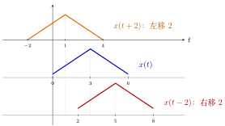
图 6 平移：三条同样形状的三角形，只是位置不同。竖直点线对齐三个峰（\(t=1,3,5\)），相邻两个峰之间相差 \(2\)。形状、峰高、底边都不变。
▸ 平移改变了什么，没改变什么。
-
没变：形状、峰高、面积（\(\int x(t-t_0)\d t=\int x(t)\d t\)）、能量。
-
变了：每个点的位置整体移动 \(t_0\)。
对比前面：压缩/拉伸会改变宽度和面积，翻转改变方向，只有平移什么形状上的东西都不改。
2.5 概念：合在一起 \(x(at+b)\)¶
前面把口诀的二、三、四句分别拆开看过了。现在把它们放到一起：一般的自变量变换是 \(x(at+b)\)，其中 \(a\) 可正可负，\(b\) 是常数。
重点
一步到位的验算公式：原来在 \(t=p\) 处的点，在 \(x(at+b)\) 里变到
处，纵轴值不变。（令 \(at+b=p\) 解出 \(t\)。）画图时可以先用这个公式把三个关键点的新位置算出来，再用口诀检查。
做法顺序：先化成标准形式 \(x\bigl(a(t+\tfrac ba)\bigr)\)，再按「翻转 \(\to\) 压缩或拉伸 \(\to\) 平移」做，平移量是 \(b/a\)（不是 \(b\)）。
2.6 证明：为什么口诀成立¶
这里把口诀成立的道理写出来，记住这三条就不容易错。
-
为什么要化成 \(x(a(t+b/a))\)（提出系数）：因为「平移」平移的是 \(t\) 本身。\(x(3t+6)\) 里的 \(6\) 是对 \(3t\) 加的，不是对 \(t\) 加的，所以真正平移的距离是 \(6/3=2\)，不是 \(6\)。化成标准形式 \(x(3(t+2))\) 之后，括号里的 \(2\) 才是直接作用在 \(t\) 上的平移量。
-
为什么加号左移：新信号在 \(t\) 处的值，是原信号在 \(t+2\) 处的值。原信号在 \(p\) 处的特征（比如峰），在新信号里要到 \(t+2=p\)，即 \(t=p-2\) 处才看得到，比原来位置小，就是向左。减号反之。
-
为什么系数大于 \(1\) 压缩：\(x(3t)\) 在 \(t\) 处的值是原信号在 \(3t\) 处的值，原信号走完 \(3\) 个单位，新信号只用 \(1\) 个单位，所以「变快」了，波形被挤窄。系数小于 \(1\) 则相反，被拉宽。
下图把第二条（为什么加号左移）画出来：下排是 \(x(t+2)\)，上排是 \(x(t)\)，虚线连接「新信号的点」和「它在原信号里读取的位置」（读取位置是 \(t+2\)）。
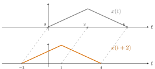
图 7 下排 \(x(t+2)\) 在 \(t=-2,1,4\) 处的值，是上排 \(x(t)\) 在 \(\tau=t+2=0,3,6\) 处的值。每个特征（比如峰）在新信号里出现的位置，比原来小 \(2\)，所以是左移。
▸ 图解：为什么是「压缩」——从输出倒推到输入。 \(x(2t)\) 在 \(t\) 处的值，是原信号在 \(2t\) 处的值。用具体数字走一遍（三角波：\(0\le\tau\le3\) 时 \(x(\tau)=\tau/3\)，\(3\le\tau\le6\) 时 \(x(\tau)=(6-\tau)/3\)）：
| 新信号的 \(t\) | \(0\) | \(0.5\) | \(1\) | \(1.5\) | \(2\) | \(3\) |
| 要去原信号读的位置 \(\tau=2t\) | \(0\) | \(1\) | \(2\) | \(3\) | \(4\) | \(6\) |
| 读到的值 \(x(\tau)=x(2t)\) | \(0\) | \(\tfrac13\) | \(\tfrac23\) | \(1\) | \(\tfrac23\) | \(0\) |
新信号只走了 \(t=0\to3\)，已经把原信号从 \(\tau=0\) 读到了 \(\tau=6\) 的全部内容，所以波形被「压」进了原来一半的时间里。下图把对应关系画出来：下排是 \(x(2t)\)，上排是 \(x(t)\)，每条虚线连接「新信号的点」和「它在原信号里读取的位置」。把这些虚线向下延长，它们会交于纵轴上的同一点（图中的「放射中心」），这就是「以纵轴为中心的压缩」。
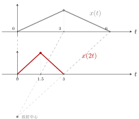
图 8 压缩 \(2\) 倍：下排 \(x(2t)\) 上的点 \(t=0,1.5,3\)，对应它在上排 \(x(t)\) 里读取的位置 \(\tau=0,3,6\)（每个读取位置是 \(t\) 的 \(2\) 倍）。虚线是对应关系。
说明
一个容易踩的坑：先化成标准形式，再按「翻转 \(\to\) 压缩或拉伸 \(\to\) 平移」的顺序做，平移量是 \(b/a\)，不是 \(b\)。如果坚持先平移再压缩，平移量就是 \(b\)（即 \(x(t+6)\)，再压缩 \(3\) 倍），结果相同，但很容易搞错，所以「先化成标准形式」放在口诀第一条。
2.7 例题¶
例 1 三角波的 \(x(3t+6)\) 与 \(x(-3t+6)\) 翻转·压缩·平移
题目：已知 \(x(t)\) 是下面的三角波：\(t\in[0,3]\) 上升、\(t\in[3,6]\) 下降，最高点高度为 \(1\)。画出 \(x(3t+6)\) 和 \(x(-3t+6)\)。
图 9 已知的三角波 \(x(t)\)：在 \(t=0\) 处为 \(0\)，\(t=3\) 处升到 \(1\)，\(t=6\) 处回到 \(0\)。
▸ 方法一：固定关键点。 把波形上的三个关键点（\(t=0,3,6\)）固定下来，问：在新信号里，这三个点分别跑到了哪里？思路是：新信号 \(x(3t+6)\) 在 \(t\) 处的值，等于 \(x\) 在「括号里那个数」处的值。所以让括号里的数等于原来的关键点：
| 原来的关键点 | \(x(\cdot)\) 的值 | 令 \(3t+6\) 等于它 | 新信号里对应的 \(t\) |
|---|---|---|---|
| \(0\) | \(0\) | \(3t+6=0\) | \(t=-2\) |
| \(3\) | \(1\)（峰） | \(3t+6=3\) | \(t=-1\) |
| \(6\) | \(0\) | \(3t+6=6\) | \(t=0\) |
所以 \(x(3t+6)\) 是一个三角波：在 \(t=-2\) 处为 \(0\)，\(t=-1\) 处是峰（高 \(1\)），\(t=0\) 处回到 \(0\)。
同样 \(x(-3t+6)\)：\(-3t+6=0\Rightarrow t=2\)；\(=3\Rightarrow t=1\)；\(=6\Rightarrow t=0\)。它是 \(t=0\) 处为 \(0\)、\(t=1\) 处是峰、\(t=2\) 处回到 \(0\) 的三角波。
下面的口诀更常用：先建立「信号移来移去、翻转过来翻转过去、拉伸缩短」的图像感。
▸ 方法二：四步口诀。 \(x(3t+6)\)：
-
化成标准形式：把 \(t\) 前面的系数提出来，\(x(3t+6)=x\bigl(3(t+2)\bigr)\)；
-
前有负号翻转：\(3\) 前面没有负号，这步可以不做；
-
系数大于 \(1\) 压缩：系数是 \(3\gt{}1\)，横向压缩 \(3\) 倍。\(x(t)\) 的关键点 \(0,3,6\) 除以 \(3\)，变成 \(0,1,2\)；
-
加号左移：括号里是 \(t+2\)，是加号，左移 \(2\) 个单位：\(0,1,2\) 变成 \(-2,-1,0\)。
\(x(-3t+6)\)：
-
化成标准形式：\(x(-3t+6)=x\bigl(-3(t-2)\bigr)\)。（验算：\(-3\times(-2)=6\)。）
-
前有负号翻转：先画 \(x(-t)\)，以纵轴为对称轴翻过去：关键点 \(0,3,6\) 变成 \(0,-3,-6\)；
-
系数绝对值 \(3\gt{}1\) 压缩：针对翻转后的图压缩 \(3\) 倍：\(-6,-3,0\) 变成 \(-2,-1,0\)，得到 \(x(-3t)\)；
-
减号右移：括号里是 \(t-2\)，是减号，右移 \(2\) 个单位：\(-2,-1,0\) 变成 \(0,1,2\)。
最后得到的答案和方法一的结果一致（峰在 \(t=1\)，两端在 \(t=0\) 和 \(t=2\)）。
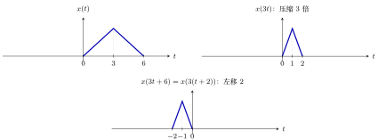
图 10 \(x(3t+6)\) 的做法：先压缩（\(x(3t)\)），再左移 \(2\)。
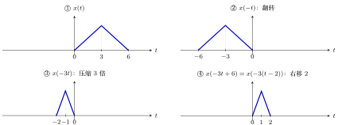
图 11 \(x(-3t+6)\) 的四步：①\(\to\)② 翻转，②\(\to\)③ 压缩，③\(\to\)④ 右移。
这四步要熟练掌握。
例 2 \(x\bigl(-\tfrac12t+1\bigr)\) 翻转·拉伸·平移
第二道题。注意式子是 \(x\bigl(-\tfrac12t+1\bigr)\)，不是 \(x(-2t+1)\)。
已知 \(x(t)\) 是一个直角三角形：在 \(t=-1\) 处有一条竖直边（高 \(2\)），斜边向右下落到 \(t=0\) 处的 \(0\)。按四步口诀计算：
-
标准形式：\(x\bigl(-\tfrac12t+1\bigr)=x\bigl(-\tfrac12(t-2)\bigr)\)；
-
前有负号翻转：竖直边从 \(t=-1\) 翻到 \(t=1\)，斜边落点仍在 \(0\)；
-
系数绝对值 \(\tfrac12\lt{}1\) 拉伸：横向拉伸 \(2\) 倍，竖直边到 \(t=2\)，落点仍是 \(0\)；
-
减号右移 \(2\)：竖直边到 \(t=4\)，落点到 \(t=2\)。
（验算两点：\(t=4\) 时 \(x(-\tfrac12\cdot4+1)=x(-1)=2\)；\(t=2\) 时 \(x(0)=0\)。）
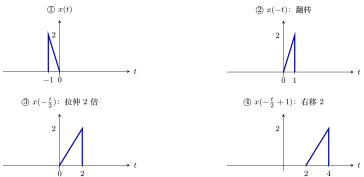
图 12 \(x(-\frac12t+1)\) 的四步。
例 3 反过来做：已知 \(x(3-2t)\)，求 \(x(t)\) 变量代换
这道题「反过来了」：给的是变换之后的波形，要画原来的 \(x(t)\)。
题目给的 \(x(3-2t)\) 的波形：\(t\in[2,3]\) 上高度 \(1\)，\(t\in[3,4]\) 上高度 \(2\)，其余为 \(0\)。
思路：变量代换。设 \(u=3-2t\)，则 \(t=\dfrac{3-u}{2}\)。已知的是「关于 \(t\) 的函数 \(x(3-2t)\)」，把它的图像当成一个已知函数 \(g\)，则要求的 \(x(t)=g\bigl(\tfrac{3-t}{2}\bigr)\)，也就是 \(g\) 做了自变量变换。把它化成标准形式：
然后照口诀：
-
标准形式：\(-\tfrac12(t-3)\)；
-
前有负号翻转：\(g\) 的图（在 \([2,4]\)）翻成 \([-4,-2]\)；
-
系数绝对值 \(\tfrac12\lt{}1\) 拉伸 \(2\) 倍：\([-8,-4]\)；
-
减号右移 \(3\)：\([-5,-1]\)。
答案：\(x(t)\) 在 \([-5,-3]\) 上高度 \(2\)，在 \([-3,-1]\) 上高度 \(1\)。
下面每一步单独画一张，并标上刻度（这里的 \(g\) 就是已知的 \(x(3-2t)\)）：
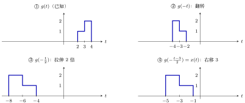
图 13 例 3 的四步：①\(\to\)② 翻转，区间 \([2,4]\to[-4,-2]\)，高度 \(1,2\) 的两段左右互换；②\(\to\)③ 拉伸 \(2\) 倍，\([-8,-4]\)；③\(\to\)④ 右移 \(3\)，\([-5,-1]\)。
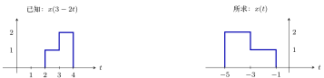
图 14 左：已知的 \(x(3-2t)\)；右：所求的 \(x(t)\)。
▸ 易错点。 按口诀走一遍：翻转后区间变成 \([-4,-2]\)，拉伸 \(2\) 倍后坐标都乘 \(2\)，变成 \([-8,-4]\)，最后「减号要右移」。作图时不要把几个图画在同一根坐标轴上，并标注 \(t\) 和关键点的数值。
（用上面的变换验算：\(x(t)=g\bigl(\tfrac{3-t}{2}\bigr)\)。取 \(t=-4\)：\(\tfrac{3-(-4)}{2}=3.5\in[3,4]\)，\(g=2\)；取 \(t=-2\)：\(\tfrac{3-(-2)}{2}=2.5\in[2,3]\)，\(g=1\)。与答案一致。）
▸ 练习。 教材第 31 页习题 1-7、1-8 都是这类题。
2.8 例题：回头看熟悉的信号¶
下面用几个熟悉的信号作例子：前两个是尺度变换，阶跃、窗和脉冲的和放在 §4–§6。
例 4 \(\Sa(\omega t)\) 与 \(\frac{\sin\omega t}{t}\) 压缩
已知 \(\Sa(t)=\dfrac{\sin t}{t}\)，画 \(\Sa(\omega t)=\dfrac{\sin\omega t}{\omega t}\)（\(\omega\gt{}0\)）。只用第三条口诀：系数是 \(\omega\)，\(\omega\gt{}1\) 就压缩 \(\omega\) 倍。原来的零点 \(\pm\pi,\pm2\pi,\dots\) 变成 \(\pm\dfrac{\pi}{\omega},\pm\dfrac{2\pi}{\omega},\dots\)，峰高仍是 \(1\)。
前一节的 \(\dfrac{\sin\omega t}{t}=\omega\cdot\Sa(\omega t)\)：把 \(\Sa(\omega t)\) 乘一个 \(\omega\)，峰高就是 \(\omega\)，零点 \(\pm k\pi/\omega\)。
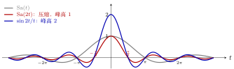
图 15 取 \(\omega=2\)。灰：\(\Sa(t)\)，零点在 \(\pm\pi,\pm2\pi,\dots\)；红：\(\Sa(2t)\)，零点向纵轴靠拢到 \(\pm\frac\pi2,\pm\pi,\dots\)，峰高仍是 \(1\)；蓝：\(\dfrac{\sin2t}{t}=2\Sa(2t)\)，零点和红线相同，峰高变成 \(2\)。
例 5 第五章的例子：\(X(\omega/T)\) 拉伸
第五章会碰到一个标准的例子：\(X(\omega)\) 是一个带限信号（band-limited signal，只在 \([-\omega_0,\omega_0]\) 上有值，其他地方为 \(0\)），峰值（\(\omega=0\) 处）为 \(E\)。问：\(X\bigl(\tfrac{\omega}{T}\bigr)\) 是什么形状？答案：峰值仍是 \(E\)，两个端点从 \(\pm\omega_0\) 变成 \(\pm T\omega_0\)。这就是第三条口诀：系数 \(\tfrac1T\)，\(T\gt{}1\) 时系数小于 \(1\)，是拉伸。
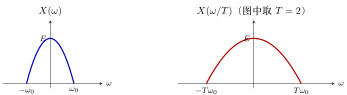
图 16 \(X(\omega/T)\) 是 \(X(\omega)\) 沿 \(\omega\) 轴拉伸 \(T\) 倍：峰值不变，宽度变成 \(T\) 倍。左边的钟形只是示意。
2.9 例题：把几种变换组合起来¶
用不同的变换组合把前面的口诀和公式各练一遍。
例 6 翻转加平移：\(x(-t+3)\) 翻转·平移
\(x(-t+b)\) 的标准形式是 \(x(-(t-b))\)，括号里是减号，所以是翻转之后右移 \(b\)，不是左移，哪怕 \(b\) 前面看起来是「加号」。下面用直角三角形演示 \(x(-t+3)\)：
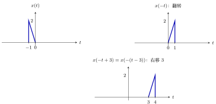
图 17 翻转再平移。竖直边（高 \(2\)）从 \(t=-1\) 翻到 \(t=1\)，再右移 \(3\) 到 \(t=4\)，斜边落点从 \(0\) 经 \(0\) 到 \(3\)。验算：\(t=4\) 时 \(x(-4+3)=x(-1)=2\)；\(t=3\) 时 \(x(0)=0\)。
例 7 平移和压缩一起出现：\(x(2t-4)\) 压缩·平移
\(x(2t-4)\) 的标准形式是 \(x(2(t-2))\)，所以先压缩 \(2\) 倍，再右移 \(2\)，平移量是 \(2\) 而不是 \(4\)。这是前面口诀第一句「化成标准形式」要防的坑。
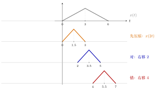
图 18 \(x(2t-4)=x(2(t-2))\)：先压缩得到 \(x(2t)\)（关键点 \(0,3,6\to0,1.5,3\)），再右移 \(2\) 得到 \(2,3.5,5\)（蓝）。把 \(b=4\) 直接当平移量会得到 \(4,5.5,7\)（红），整体偏右。验算：\(t=3.5\) 时 \(x(2\times3.5-4)=x(3)=1\)，正是峰。
例 8 不对称三角波的 \(x(-2t+4)\) 翻转·压缩·平移
选一个不对称的三角波，避免翻转之后恰好和原图重合：\(x(t)\) 在 \(t=0\) 为 \(0\)，\(t=2\) 为峰（高 \(1\)），\(t=6\) 回到 \(0\)。
一步到位验算：\(a=-2\)，\(b=4\)，\(t=\dfrac{p-4}{-2}\)：
| 原来的点 \(p\) | \(0\) | \(2\) | \(6\) |
| 新位置 \(t=\frac{p-4}{-2}\) | \(2\) | \(1\) | \(-1\) |
所以 \(x(-2t+4)\) 是一个三角波：左端在 \(t=-1\)，峰在 \(t=1\)，右端在 \(t=2\)。注意左右互换了（原来的 \(p=0\) 现在在右端）。
口诀做法（先化成标准形式 \(x(-2(t-2))\)）：
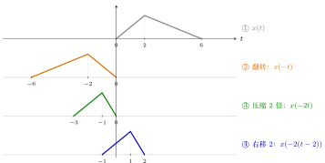
图 19 口诀顺序：①\(\to\)② 前有负号翻转，②\(\to\)③ 系数绝对值 \(2\gt{}1\) 压缩，③\(\to\)④ 减号右移 \(2\)。每步的三个关键点：\((0,2,6)\to(-6,-2,0)\to(-3,-1,0)\to(-1,1,2)\)，与一步到位算出的结果一致。
▸ 换一种顺序也行，但平移量不同。 也可以先平移、再做翻转和压缩：\(x(-2t+4)\) 是把 \(x(\cdot+4)\)（先左移 \(4\)）里的 \(t\) 换成 \(-2t\)。
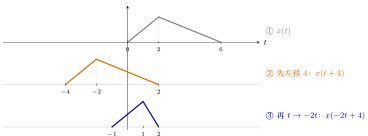
图 20 另一种顺序：先把 \(x(t)\) 左移 \(4\) 得到 \(x(t+4)\)，再把自变量换成 \(-2t\)（翻转并压缩 \(2\) 倍），每个点 \(p\to-p/2\)：\((-4,-2,2)\to(2,1,-1)\)，即左端 \(-1\)、峰 \(1\)、右端 \(2\)，得到和上一种顺序相同的结果。
两种顺序结果相同，区别只在平移量：先缩放再平移，要先提出系数，括号里是 \(t-2\)，平移 \(2\) 个单位（\(=|b/a|=4/2\)）；先平移再缩放，平移的是 \(x(\cdot+4)\)，平移 \(4\) 个单位（就是 \(b\)）。所以「化成标准形式」放在口诀第一句：提出系数之后，平移量一目了然，不用在心里换算。
▸ 最常见的几个错误（对照图）。 同样画 \(x(-2t+4)\)，下图把正确答案和其中两种错误画在一起：
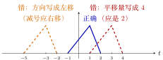
图 21 蓝：正确答案（左端 \(-1\)、峰 \(1\)、右端 \(2\)）。红虚线：把平移量误写成 \(b=4\)（翻转压缩之后又右移 \(4\)），整体偏右。橙虚线：把「减号右移」记反，左移 \(2\)，偏到左边。
-
忘了提出系数：\(-2t+4\) 里的 \(4\) 对应的平移量是 \(4/2=2\)（不是 \(4\)）；
-
方向记反：标准形式是 \(x(-2(t-2))\)，括号里是减号，所以右移；
-
左右搞反：有负号就要翻转，翻转之后左端和右端互换（本例中原来的 \(p=0\) 变到右端）。
遇到拿不准的时候，用上面「一步到位」公式把三个关键点算一遍，对照就知道哪里错了。
例 9 回声：原声加上延迟、变小的一份 平移的应用
声音的回声就是「原声加上延迟之后、变小的一份」。设 \(x(t)\) 是一个声音片段，则
是原声加上延迟 \(8\)、音量减半的回声。用上面的三角波示意：
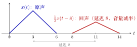
图 22 \(y(t)=x(t)+\tfrac12x(t-8)\)：原声（蓝）与延迟、减半的回声（红）。两个三角形没有重叠，所以相加后就是各自原样。
如果延迟小于信号宽度，两份会重叠，相加就要把重叠部分逐点加起来。下面把延迟改成 \(4\)（小于底边 \(6\)）：\(y(t)=x(t)+\tfrac12x(t-4)\)。
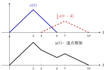
图 23 延迟 \(4\) 时两份重叠在 \([4,6]\) 上。上：蓝 \(x(t)\) 与红虚线 \(\tfrac12x(t-4)\)；下：相加后的 \(y(t)\)，关键点 \((0,0),(3,1),(4,\tfrac23),(6,\tfrac13),(7,\tfrac12),(10,0)\)。验算：\(t=4\) 时 \(x(4)=\tfrac23\)，回声刚开始为 \(0\)，和为 \(\tfrac23\)；\(t=6\) 时 \(x(6)=0\)，回声 \(\tfrac12x(2)=\tfrac13\)。
例 10 周期信号与「余弦就是左移的正弦」 平移与周期
第一份笔记里周期信号的定义 \(x(t)=x(t+mT)\)，用现在的话说就是：平移任意整数个周期，信号不变。再举一个熟悉的例子：\(\cos t=\sin\bigl(t+\tfrac\pi2\bigr)\)，即把正弦左移 \(\tfrac\pi2\) 就是余弦。
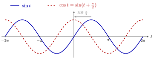
图 24 \(\cos t=\sin(t+\tfrac\pi2)\)：正弦（蓝）左移 \(\tfrac\pi2\) 就得到余弦（红虚线）。再左移 \(2\pi\)（一个周期）则回到原来的曲线。
3 离散信号的自变量变换¶
3.1 概念¶
口诀仍然是这四句，但离散的情况 \(n\) 前面的系数基本只有 \(+1\) 或 \(-1\)，所以第三句（压缩、拉伸）一般用不上：\(x[2n]\) 会把奇数位置的点丢掉，\(x[n/2]\) 在 \(n\) 为奇数时没有定义，都需要额外约定。
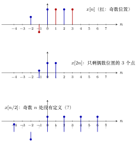
图 25 离散情形不能随便缩放。上：\(x[n]\)（\(x[-2]=\tfrac12\)，\(x[-1]=-\tfrac12\)，\(x[0..3]=1\)）。中：\(x[2n]\) 取 \(x[-2],x[0],x[2]\)，放在 \(n=-1,0,1\)，奇数位置的 \(x[-1],x[1],x[3]\) 被丢掉了。下：\(x[n/2]\) 把 \(x[k]\) 放到 \(n=2k\) 处，奇数 \(n\) 要读 \(x\) 在半整数处的值，没有定义。
▸ 离散的翻转。 \(x[n]\to x[-n]\)，同样以 \(n=0\) 为对称轴：\(n=p\) 处的值变到 \(n=-p\) 处。用一个小序列 \(x[n]\)（\(x[-2]=\tfrac12\)，\(x[-1]=-\tfrac12\)，\(x[0..3]=1\)，后面的例题用的也是它）：翻转后 \(x[-n]\) 在 \(n=2\) 处是 \(\tfrac12\)，\(n=1\) 处是 \(-\tfrac12\)，\(n=0,-1,-2,-3\) 处是 \(1\)。
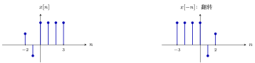
图 26 离散翻转：每根竖线以 \(n=0\) 为轴镜像，高度不变。
▸ 离散的平移。 \(x[n-k]\)（\(k\) 为整数）右移 \(k\)，\(x[n+k]\) 左移 \(k\)，形状不变，后面例题里的 \(x[n-3]\) 就是这种。离散的平移量只能是整数（相邻采样点之间没有点可放）。
3.2 例题¶
例 1 \(x[n-3]\) 与 \(x[4-n]\) 右移·翻转
已知 \(x[n]\)：\(x[-2]=\tfrac12\)，\(x[-1]=-\tfrac12\)，\(x[0]=x[1]=x[2]=x[3]=1\)，其余为 \(0\)。
\(x[n-3]\)：已经是标准形式；\(n\) 前面没有负号，系数是 \(1\)，不用翻转也不用压缩；减号右移 \(3\)。形状不变，把坐标改一改：原来 \(-2,-1\) 的点移到 \(1,2\)，原来 \(0,1,2,3\) 的点移到 \(3,4,5,6\)，即右移三个单位。
\(x[4-n]\)：标准形式是 \(x[-(n-4)]\)，先翻转，再右移 \(4\)。逐步追踪每个点：
| 原来的 \(n\) | 翻转后 | 右移 \(4\) 后 | 在新信号里的位置 | 值 |
|---|---|---|---|---|
| \(3\) | \(-3\) | \(1\) | \(n=1\) | \(1\) |
| \(2\) | \(-2\) | \(2\) | \(n=2\) | \(1\) |
| \(1\) | \(-1\) | \(3\) | \(n=3\) | \(1\) |
| \(0\) | \(0\) | \(4\) | \(n=4\) | \(1\) |
| \(-1\) | \(1\) | \(5\) | \(n=5\) | \(-\tfrac12\) |
| \(-2\) | \(2\) | \(6\) | \(n=6\) | \(\tfrac12\) |
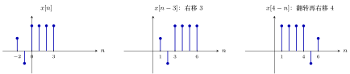
图 27 离散信号的自变量变换。\(x[n]\) 在 \(n=-2,-1\) 处是 \(\tfrac12,-\tfrac12\)，在 \(n=0,1,2,3\) 处是 \(1\)。
4 阶跃信号 \(u(t)\)、\(u[n]\) 的自变量变换¶
4.1 概念：令括号里的式子等于 \(0\)¶
把口诀用到最简单的信号上：阶跃。
\(u(t)\) 只有一个「跳变」：括号里的数大于 \(0\) 时为 \(1\)，小于 \(0\) 时为 \(0\)。所以对 \(u(at+b)\) 有一个最省事的办法，不用画中间步骤：
重点
令括号里的式子 \(at+b\) 等于 \(0\)，解出的 \(t\) 就是跳变位置；再看括号里 \(\gt{}0\) 的那一侧，那一侧取 \(1\)。
▸ 离散：\(u[n]\)。 \(u[n]\) 的定义是 \(n\ge0\) 时为 \(1\)，\(n\lt{}0\) 时为 \(0\)。所以对 \(u[n+b]\) 或 \(u[-n+b]\) 也可以用同一个最省事的办法：
重点
令括号里的式子 \(\ge0\)，解出的 \(n\) 的范围就是取 \(1\) 的那一段；其余是 \(0\)。（注意是「\(\ge0\)」，因为 \(u[0]=1\)，连续的 \(u(t)\) 在边界上不规定值，这里的边界点是包含的。）
▸ 离散情形的一个区别。 \(u[n]\) 在 \(n=0\) 处有确定的值 \(1\)，所以 \(u[-n]\) 在 \(n\le0\) 上是 \(1\)（包含 \(n=0\)），\(u[n-3]\) 在 \(n\ge3\) 上是 \(1\)（包含 \(n=3\)）。连续的 \(u(t)\) 跳变点处的值不规定，离散的没有这个问题（§5 里 \(u[n+2]-u[n-3]\) 一题，边界点的处理就是靠这一点）。
▸ 连续 \(u(t)\) 与离散 \(u[n]\) 的对比。
| 连续 \(u(t)\) | 离散 \(u[n]\) | |
|---|---|---|
| 跳变（边界）点的值 | 不规定 | 确定为 \(1\) |
| 取 \(1\) 的条件 | 括号里 \(\gt{}0\) | 括号里 \(\ge0\) |
| \(u(at)\) 与 \(u[an]\)（\(a\gt{}0\)） | 都等于原来的阶跃 | \(u[2n]=u[n]\)，但一般要小心 |
4.2 证明：为什么 \(u(2t)=u(t)\)¶
▸ 连续：压缩对阶跃没有效果。 \(2t\gt{}0\) 和 \(t\gt{}0\) 是同一个条件，跳变位置都在 \(t=0\)（而 \(0\) 压缩任意倍还是 \(0\)）。更一般地，对任意 \(a\gt{}0\)，\(u(at)=u(t)\)。这是阶跃信号很特殊的地方：拉伸压缩都不改变它的图像，只有平移和翻转才会改变。（这一点对「冲激信号」不成立：\(\delta(at)\) 与 \(\delta(t)\) 差一个系数，第二章再讲。）
▸ 离散：\(u[2n]\) 怎么看。 \(u[2n]\) 是把 \(u[n]\) 每隔一个取一个点（\(n=\dots,-2,-1,0,1,2,\dots\) 对应 \(u\) 的 \(\dots,-4,-2,0,2,4,\dots\) 这些位置），取出来的值是：负的 \(n\) 全是 \(0\)，\(n\ge0\) 全是 \(1\)，所以结果仍是 \(u[n]\)。这与连续的 \(u(2t)=u(t)\) 一致。一般离散信号在 \(n\) 前面带 \(2\) 会丢掉点，不能简单说成「压缩」；\(u[n/2]\) 在 \(n\) 为奇数时没有定义，需要额外约定。
4.3 例题¶
例 1 阶跃函数 \(u(t)\) 的五个变换 跳变位置
按上面的办法算五个，再用口诀对照检查：
| 信号 | 跳变位置 | 取 \(1\) 的一侧 | 对应的口诀 |
|---|---|---|---|
| \(u(t-2)\) | \(t=2\) | 右侧 | 减号右移 \(2\) |
| \(u(t+2)\) | \(t=-2\) | 右侧 | 加号左移 \(2\) |
| \(u(-t)\) | \(t=0\) | 左侧（\(-t\gt{}0\iff t\lt{}0\)） | 前有负号翻转 |
| \(u(2t)\) | \(t=0\) | 右侧 | 压缩 \(2\) 倍，但图没有变 |
| \(u(-2t+4)\) | \(t=2\) | 左侧（\(-2t+4\gt{}0\iff t\lt{}2\)） | 标准形式 \(u(-2(t-2))\)：翻转、压缩（无影响）、右移 \(2\) |
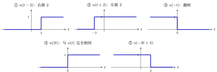
图 28 \(u(t)\) 的自变量变换。蓝色粗线是新信号，横轴上方一条线表示取值 \(1\)，下方（贴着横轴）表示取值 \(0\)。跳变点处的值不规定（和 \(u(0)\) 任取一样）。
例 2 阶跃序列 \(u[n]\) 的五个变换 取 1 的范围
| 序列 | 括号里 \(\ge0\) | 取 \(1\) 的范围 | 对应的口诀 |
|---|---|---|---|
| \(u[n-3]\) | \(n-3\ge0\) | \(n\ge3\) | 减号右移 \(3\) |
| \(u[n+2]\) | \(n+2\ge0\) | \(n\ge-2\) | 加号左移 \(2\) |
| \(u[-n]\) | \(-n\ge0\) | \(n\le0\) | 前有负号翻转 |
| \(u[-n+4]\) | \(-n+4\ge0\) | \(n\le4\) | 标准形式 \(u[-(n-4)]\)：翻转，减号右移 \(4\) |
| \(u[2n]\) | \(2n\ge0\) | \(n\ge0\) | 与 \(u[n]\) 的图相同（见 §4.2） |
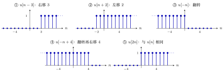
图 29 \(u[n]\) 的自变量变换。每根竖线高 \(1\)，横轴上的小圆点表示取值 \(0\)；边界点 \(n_0\) 处的值是确定的 \(1\)，所以 \(u[n-3]\) 的第一根线在 \(n=3\)，\(u[-n]\) 的最后一根线在 \(n=0\)。
5 用阶跃信号表示「窗」¶
5.1 概念：两个阶跃相减¶
-
\(u(t-t_0)\)：阶跃函数 \(u(t)\) 的自变量减 \(t_0\)，减号右移 \(t_0\)：从 \(t=t_0\) 开始等于 \(1\)。
-
方波 \(g(t)\)：在 \(0\lt{}t\lt{}t_0\) 上为 \(1\)，其他地方为 \(0\)：
\[ g(t)=u(t)-u(t-t_0). \]理由：\(u(t)\) 从 \(0\) 开始是 \(1\)，\(u(t-t_0)\) 从 \(t_0\) 开始是 \(1\)，两个相减：\(t\lt{}0\) 时都是 \(0\)，\(t\gt{}t_0\) 时是 \(1-1=0\)，只在 \(0\lt{}t\lt{}t_0\) 一段 \(1-0=1\)。
图 30 用两个阶跃相减得到方波：\(g(t)=u(t)-u(t-t_0)\)。
▸ 离散的版本。 \(g_N[n]\)：在 \(n=0,1,\dots,N-1\) 上为 \(1\)，其余为 \(0\)。写法：\(g_N[n]=u[n]-u[n-N]\)。理由：\(u[n]\) 从 \(0\) 开始是 \(1\)，\(u[n-N]\) 从 \(N\) 开始是 \(1\)，相减后只在 \(0\le n\le N-1\) 上是 \(1\)。
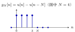
图 31 离散的「窗」\(g_N[n]=u[n]-u[n-N]\)（图中 \(N=4\)）：在 \(n=0,1,\dots,N-1\) 上为 \(1\)。
5.2 例题¶
例 1 \(u(t+3)-u(t-3)\) 方波
画 \(u(t+3)-u(t-3)\)：加号左移 \(3\)，从 \(t=-3\) 开始是 \(1\)；减号右移 \(3\)，从 \(t=3\) 开始是 \(1\)；相减后 在 \(-3\lt{}t\lt{}3\) 上等于 \(1\)，其他为 \(0\)。
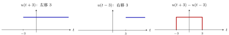
图 32 \(u(t+3)-u(t-3)\) 在 \(-3\lt{}t\lt{}3\) 上等于 \(1\)。
例 2 \(u[n+2]-u[n-3]\) 5 个点
画 \(u[n+2]-u[n-3]\)：\(u[n+2]\) 从 \(n=-2\) 开始是 \(1\)，\(u[n-3]\) 从 \(n=3\) 开始是 \(1\)，相减后在 \(n=-2,-1,0,1,2\)（共 5 个点）上是 \(1\)，其余为 \(0\)。 离散的这类题比连续的稍微烧脑，难点是「在边界处哪里开始等于零」要算清楚：右边在 \(n=3\) 处，两个阶跃都是 \(1\)，相减等于 \(0\)，所以右端点是 \(n=2\) 而不是 \(n=3\)。
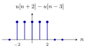
图 33 \(u[n+2]-u[n-3]\) 在 \(n=-2,\dots,2\) 上为 \(1\)。
6 把序列写成冲激的和¶
6.1 概念¶
▸ 一个著名的公式（书第 45 页，式 2-28）：序列等于平移并加权的单位脉冲之和。
重点
6.2 证明：为什么成立¶
-
\(x[k]\) 是 \(x[n]\) 在 \(n=k\) 处的值（一个数）；
-
\(\delta[n-k]\) 是在 \(n=k\) 处为 \(1\)、其他处为 \(0\) 的信号；
-
两者相乘，得到「只在 \(n=k\) 处等于 \(x[k]\)，其余处为 \(0\)」的信号；
-
对每一个不同的 \(k\) 都这样做，再全部加起来，每个位置 \(n\) 上都取到了正确的值。
这个公式第二章还会再讲；有了「移来移去」的概念就容易理解。下面例题里的五项相加，就是它的一个具体实例（只有 \(k=-2,\dots,2\) 这五项非零）。
6.3 例题¶
例 1 把 \(x[-2..2]=1,2,1,-1,-2\) 写成脉冲的和 五项之和
例：\(x[n]\) 在 \(n=-2,-1,0,1,2\) 处分别是 \(1,2,1,-1,-2\)，其余为 \(0\)。问：能看出它等于下面这个式子吗？
解释（用的还是那两句口诀）：
-
\(\delta[n]\) 只在 \(n=0\) 处是 \(1\)；
-
\(\delta[n+2]\)：加号左移 \(2\)，在 \(n=-2\) 处是 \(1\)，所以第一项刚好对应 \(x[-2]=1\)；
-
\(\delta[n+1]\) 在 \(n=-1\) 处是 \(1\)，但 \(x[-1]=2\)，所以要乘 \(2\)：\(2\delta[n+1]\)；
-
\(\delta[n-1]\)：减号右移 \(1\)，在 \(n=1\) 处是 \(1\)，而 \(x[1]=-1\)，所以乘 \(-1\)；
-
同理 \(-2\,\delta[n-2]\) 对应 \(x[2]=-2\)。
看到这样的序列，应马上反应到：它就是若干个平移过的单位脉冲，每一个按对应的值加权，再加起来。
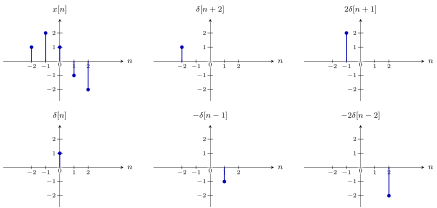
图 34 把 \(x[n]\) 拆成五个平移并加权的单位脉冲：五个分量相加就是左上角的 \(x[n]\)（\(x[-2..2]=1,2,1,-1,-2\)）。